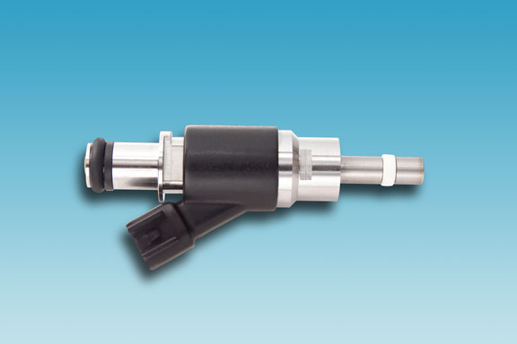

<img> as data-original-src.Contents: Basics; Fuel Injectors & Pumps; Other Pulsed RFI Sources;
Without doubt, the most pervasive RFI (Radio Frequency Interference) noise sources in any modern gasoline vehicle is the ignition system. These systems contain a coil of wire in the form of a transformer. When the coil field collapses (after the supply current is removed), a CEMF (counter-electromotive force) pulse is generated. It is this pulse, which sounds like this, that causes a spark to jump across the plug's gap. This in turn generates the harmonically-rich RFI, the majority of which is radiated. A small amount may be induced into the primary wiring, albeit rare.
Incidentally, many mobile operators believe that injections systems are also a major cause of pulsed RFI. The truth lies elsewhere, and that issue is covered below
Most vehicle manufacturers have switched over to Coil Over Plug (COP) technology in one form or another which tend to be quieter than ones still using wires. A good example of the latter are GM's corporate, push-rod engines which still use a short HV jumper from the individual coil packs to the plugs.
If you're plagued with ignition RFI, there are a few things you can do, and some you shouldn't do! Bonding the various bolted on pieces, particularly horizontal ones like the exhaust system and hood, is always good amateur practice. Some forms of RFI, AFI, and EMI, may be caused or exacerbated by ground loops, so proper wiring practices are important too. And, common mode chokes are always required!
If your vehicle still uses high tension ignition wiring, replacement parts should be direct OEM replacements. Using non resistor wire and plugs will increase the level of RFI. If nothing else is apparent, reducing ignition RFI is not a one-step, cure-all process.
It should be mentioned, that shielding modern, variable dwell, high-voltage ignition systems is a disaster waiting to happen. What's more, the use a ferrite beads is a waste of resources, and may actually increase RFI rather than reduce it. Forewarned, is forearmed!
Lastly, the AGC circuitry built into every transceiver, and how it is adjusted, does have an affect on the level of perceived noise we hear. That issue is covered in the highlighted article.
Inductive coil fuel injectors do indeed cause RFI, but compared to any form of spark ignition, they pale in comparison. When they're RFI noisy, it is indicative of a bad injector and/or a defective wiring harness feeding them. The only fuel injection systems which can be very pervasive, are older diesel engines which use a shuttle system. They sound like this. Engines which use mechanical or piezo injectors are virtually RFI free.

The fuel pumps feeding the injectors can also cause RFI. However, if you own a vehicle made after ≈ 2004, the chances of the fuel pump being a major source of RFI is very slim. If you're experiencing an RFI problem you think might be the fuel pump, here's some enlightenment. All late-model vehicles use some sort of data busing between the various on-board CPUs. Their usual RFI signatures is a series of evenly-spaced birdies, some of which may be pulsing. These buses operate when the ignition switch is on, and whenever there is engine oil pressure.
During the brief time it takes the oil pressure to drop, the fuel pump continues to operate to facilitate purging the fuel vapor canister. Thus, the RFI from the mixing of the data bus frequencies (pulsing or otherwise), coincides with the operation of the fuel pump. It is therefore easy to make an incorrect assumption about where the RFI is coming from. Typically, there is a slight delay after the ignition is turned on, before you hear the pump charging the fuel rail, and then a rhythmic pulse as the pump maintains fuel rail pressure.
Automotive electronics are adrift with digital signatures, most of which aren't bothersome, but some are! As noted in the highlighted article, some automotive computerized control systems is a color burst crystal oscillator (3.579545 MHz). Harmonics from these oscillators can extend clear into the VHF spectrum.
Another very good example are on-board, 120 volt inverters. The vast majority use modified square-wave technology, mainly because they're inexpensive to facilitate. They're also major sources of RFI! Thankfully, they're always separately fused, making diagnosing an easy task.
Radiator and AC fans are often PWM (pulsed-width modulated), as are some forms of alternator regulators. Even windshield wiper controls have been known to cause low-grade RFI.
While most forms of RFI can be dealt with, or at least reduced to tolerable levels, assuming the RFI emanates from some specific source to the exclusion of all others, just makes identification and/or addressing just that much harder.
{kind=link}